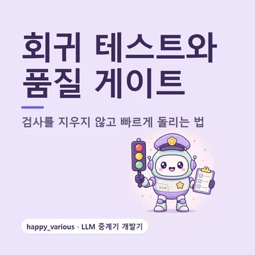
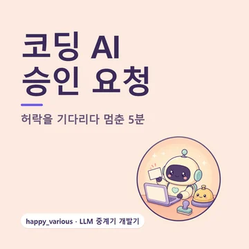

기술블로그
기술블로그AI 활용 37편 · 프로젝트 개발기 33편
 AI 모션그래픽 만드는 법, 영상 모델과 코드 직접 비교AI로 모션그래픽을 만드는 세 가지 방법(영상 생성 모델, AI가 쓰는 코드, 편집 툴 AI 기능)을 정리하고, 같은 6초 소개 장면을 코드·Kling 2.5 Turbo·Veo 3.1 Fast로 직접 만들어 시간·요금·한글 정확도를 비교했다. 클로드 코드로 프롬프트 두 줄 만에 MP4를 뽑는 순서, Veo 3.1 요금과 비율, 클로드 모션·리모션·하이퍼프레임즈, 어디에 무엇을 쓰면 좋은지까지.
AI 모션그래픽 만드는 법, 영상 모델과 코드 직접 비교AI로 모션그래픽을 만드는 세 가지 방법(영상 생성 모델, AI가 쓰는 코드, 편집 툴 AI 기능)을 정리하고, 같은 6초 소개 장면을 코드·Kling 2.5 Turbo·Veo 3.1 Fast로 직접 만들어 시간·요금·한글 정확도를 비교했다. 클로드 코드로 프롬프트 두 줄 만에 MP4를 뽑는 순서, Veo 3.1 요금과 비율, 클로드 모션·리모션·하이퍼프레임즈, 어디에 무엇을 쓰면 좋은지까지. Aside 브라우저란, 내 계정으로 일하는 AI 에이전트 브라우저YC 2025년 가을 기수 스타트업이 만든 에이전트 브라우저 Aside를 공식 사이트·도움말·약관 기준으로 정리했다. 로그인한 사이트를 AI가 직접 다루는 방식, 메모리·비밀번호 금고·루틴 같은 주요 기능, 무료·Pro·Max 요금과 AI 모델 연결, 작업 내용이 어디에 남고 어디로 가는지, 프롬프트 인젝션을 고려해 안전하게 맡기는 순서까지. 직접 설치해 써 본 사용기는 아니다.
Aside 브라우저란, 내 계정으로 일하는 AI 에이전트 브라우저YC 2025년 가을 기수 스타트업이 만든 에이전트 브라우저 Aside를 공식 사이트·도움말·약관 기준으로 정리했다. 로그인한 사이트를 AI가 직접 다루는 방식, 메모리·비밀번호 금고·루틴 같은 주요 기능, 무료·Pro·Max 요금과 AI 모델 연결, 작업 내용이 어디에 남고 어디로 가는지, 프롬프트 인젝션을 고려해 안전하게 맡기는 순서까지. 직접 설치해 써 본 사용기는 아니다. AI 코딩 도우미 협업 회고, 사람이 판단하고 AI가 만들었다 (LLM 중계기 개발기)LLM 중계기 개발기의 마지막 편입니다. 7월 13일부터 10월 1일까지 쌓인 저장 기록 394개를 주별로 펼치고, AI 코딩 도우미가 공동 작성자로 이름을 올린 기록이 얼마나 되는지, 시험과 릴리스 노트가 어떻게 늘었는지 세어 봤어요. AI는 코드·시험·릴리스 노트·저장 메모를 썼고, 사람은 무엇을 만들고 뺄지 정하고, AI의 '고쳤다'를 실제 환경에서 확인하고, 직접 재고, 지킬 규칙을 정했다는 것을 기록으로 정리합니다. 1편의 세 질문에 답하고, 아직 계획인 다음 단계와 연재 전체 목차로 마무리해요.
AI 코딩 도우미 협업 회고, 사람이 판단하고 AI가 만들었다 (LLM 중계기 개발기)LLM 중계기 개발기의 마지막 편입니다. 7월 13일부터 10월 1일까지 쌓인 저장 기록 394개를 주별로 펼치고, AI 코딩 도우미가 공동 작성자로 이름을 올린 기록이 얼마나 되는지, 시험과 릴리스 노트가 어떻게 늘었는지 세어 봤어요. AI는 코드·시험·릴리스 노트·저장 메모를 썼고, 사람은 무엇을 만들고 뺄지 정하고, AI의 '고쳤다'를 실제 환경에서 확인하고, 직접 재고, 지킬 규칙을 정했다는 것을 기록으로 정리합니다. 1편의 세 질문에 답하고, 아직 계획인 다음 단계와 연재 전체 목차로 마무리해요. 목 테스트 한계, 가짜로 통과해도 스모크 테스트가 필요한 이유 (LLM 중계기 개발기)LLM 중계기의 자동 시험은 대부분 진짜 AI 대신 흉내만 내는 가짜를 상대로 합니다. 빠르고, 늘 같은 결과가 나오고, 고장을 일부러 만들 수 있어서예요. 그런데 가짜는 내가 아는 만큼만 진짜를 닮습니다. 최신 Codex만 흉내 낸 가짜 탓에 옛 판 Codex의 거절을 몰랐던 날, 개발 폴더에서 띄운 중계기로만 시험해 배포판에서 빠진 변경 이력을 몰랐던 일주일, 그리고 그 뒤에 만든 윈도 실전 점검과 실제 AI 점검까지. '가짜는 매번, 진짜는 내놓기 전에 적어도 한 번'이라는 균형을 비개발자 눈높이로 정리했습니다.
목 테스트 한계, 가짜로 통과해도 스모크 테스트가 필요한 이유 (LLM 중계기 개발기)LLM 중계기의 자동 시험은 대부분 진짜 AI 대신 흉내만 내는 가짜를 상대로 합니다. 빠르고, 늘 같은 결과가 나오고, 고장을 일부러 만들 수 있어서예요. 그런데 가짜는 내가 아는 만큼만 진짜를 닮습니다. 최신 Codex만 흉내 낸 가짜 탓에 옛 판 Codex의 거절을 몰랐던 날, 개발 폴더에서 띄운 중계기로만 시험해 배포판에서 빠진 변경 이력을 몰랐던 일주일, 그리고 그 뒤에 만든 윈도 실전 점검과 실제 AI 점검까지. '가짜는 매번, 진짜는 내놓기 전에 적어도 한 번'이라는 균형을 비개발자 눈높이로 정리했습니다.
회귀 테스트와 품질 게이트, 검사를 지우지 않고 빠르게 돌리는 법 (LLM 중계기 개발기)LLM 중계기는 고장 하나를 고칠 때마다 같은 고장을 다시 잡는 자동 검사를 하나씩 세웠습니다. 첫 버전이 나오고 이틀이 채 안 돼 시험을 돌릴 때마다 먼저 도는 검사·시험이 13개가 됐고, 한 번 돌리는 데 18초쯤 걸리자 기록은 '매번 18초를 물리면 시험을 안 돌리게 된다'고 적었어요. 하나도 지우지 않고 커밋 전의 빠른 핵심 검사 5종과 새 판 전의 전체 검사로 나눈 이야기, 코드가 옮겨 가면 검사도 옮겨 단 사례, 검사가 정말 무는지 일부러 고장을 넣어 확인하는 방법을 비개발자 눈높이로 정리했습니다.
코덱스·클로드 코드 승인 요청, AI가 허락을 기다리다 멈춘 이유 (LLM 중계기 개발기)Claude Code와 Codex 같은 코딩 AI는 명령을 실행하거나 파일을 고치기 전에 사람에게 '해도 될까요?'라고 묻습니다. 제가 만든 LLM 중계기에 이 AI들이 내 폴더에서 일하게 하는 '작업 폴더 모드'를 붙였더니, 중계기가 그 질문을 아무에게도 전하지 않고 조용히 버리는 바람에 AI가 대답을 기다리며 멈췄어요. 5분 뒤 시간 초과로 끝난 증상, 원인, 어떤 질문에도 반드시 답하게 한 첫 고침, 사람 화면에 승인 벨을 울리는 두 번째 고침, 폴더마다 고르는 세 가지 규칙(물어보기·자동 허용·거절), 그리고 AI에게 파일을 맡길 때의 안전장치를 비개발자 눈높이로 정리했습니다.AI 뉴스발표 원문을 확인해서 쉽게 정리한 소식 32편

SECOND SYNTAX by WY 는 그동안 만든 개인 프로젝트들을 분해하고 다시 정리해 쓸 만한 제품으로 재구성하는 곳이에요. 그 과정에서 AI를 실제로 써 본 방법과 시행착오를 기술블로그로, 확인한 AI 소식을 뉴스로 남겨요.

 어디서 볼 수 있나요
어디서 볼 수 있나요